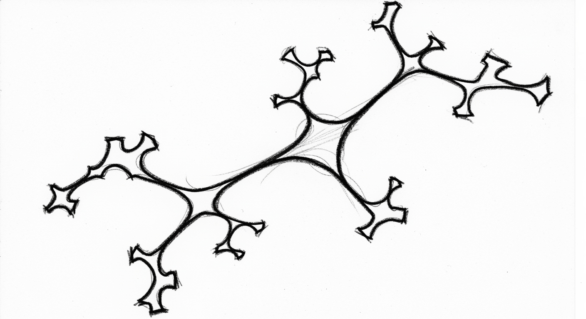

Sri Lanka Government Budget — Incomes & Expenditures
The Sri Lankan government budget summarises the country's total revenue from taxes and other sources, and expenditures on public services, programs, and other expenses.
I translate dense data into clear, impactful narratives that inform, persuade, and move people to act.
Every system has a story. I find it.
Selected Work
A real-time data storytelling initiative documenting the impact and recovery of Cyclone E2, focused on ground-truth evidence and narrative clarity for emergency response.

Designing and coordinating the official UN Sri Lanka annual report — synthesising impact data across 8+ agencies into a cohesive national development narrative.
Translating the UN SDG Fund's multi-programme results into a compelling visual report for donors and policymakers, aligned with sustainable development goals.

Designed the official Ministry of Finance five-year investment policy report, simplifying macroeconomic data into high-impact visuals for policymakers and parliament.
End-to-end UX research and interface design for a scalable financial management platform, focused on reducing cognitive load and improving user retention.
Scaled an entertainment news channel to 2M+ views in 28 days through rigorous sentiment analysis, retention engineering, and iterative content testing.
Growing a Facebook page from zero to 9K+ followers organically — a companion case study to the YouTube growth experiment, analysing platform-specific audience mechanics.
An interactive scrollytelling experience mapping Sri Lanka's drug policy against public health outcomes for a general audience.
A repeatable visual system for publishing weekly economic data as social-ready, media-grade visual reports with consistent brand quality.
A network graph analysis of political influence relationships in Sri Lanka, rendered as editorial-grade data journalism.
A district-level geographic data visualisation mapping climate risk indices — flood, drought, and coastal erosion — to support national adaptation planning.
A non-partisan civic data series visualising Sri Lankan electoral patterns, voter behaviour, and constituency demographics to support informed public participation.
Data Storytelling

The Sri Lankan government budget summarises the country's total revenue from taxes and other sources, and expenditures on public services, programs, and other expenses.

A visual reflection on growing through uncertainty, navigating chaos without a clear map, and slowly figuring things out one step at a time.

This spiral visualizes 338 initiatives that shaped Sri Lanka in 2024, with each dot representing an effort to strengthen communities, inform policy, and promote resilience.

This visual narrative uses a broken lotus flower to symbolize the weight of 2,252 reported cases, with each petal representing 100 incidents.

The nation faces a widening gap between soaring arrests for drug-related offenses and stagnant access to treatment.

Sri Lanka faces a widening gap: drug-related arrests are soaring, especially for heroin, cannabis, and methamphetamines, while access to treatment remains stagnant.

Arrests have surged across successive presidencies, with record cannabis and heroin seizures under Gotabaya Rajapaksa and the highest-ever arrests under Ranil Wickremesinghe.

The estimated case flow highlights a severe strategic imbalance and geographic concentration, reinforcing the national focus on punishment over rehabilitation.

Rehabilitation services are largely delivered by NDDCB Centers, which account for more than half of all cases, while prison-based rehab handles roughly a quarter.
Experimental
A space for experiments in AI, emerging formats, and speculative information design. No deadlines. Pure inquiry.
Using GANs to create abstract visualisations from complex datasets, exploring the boundary between data art and analytical representation.
Translating personal behavioural data into a unique, evolving visual portrait — where the chart is also the subject.
Layering quantitative data over rotoscoped video footage, bringing statistical context directly into the visual moment it describes.
Thought Leadership
Notes on information design, data ethics, and the systems that shape public understanding.
When design decisions are also moral decisions — on accuracy, framing, and the responsibilities of those who hold the pen.
Read ArticleExploring the common pitfalls — truncated axes, cherry-picked timeframes, and the design choices that distort truth without lying.
Read ArticleAI can generate charts. But it cannot yet generate judgment. A reflection on what remains irreducibly human in this practice.
Read ArticleProfessional Journey
Refining the craft through institutional challenge and high-growth digital experimentation.
Managing end-to-end data pipelines, scaling digital ecosystems to millions of views, and providing high-level UX strategy for tech and policy clients globally.
Designed and delivered the national Public Investment Programme report, simplifying complex macroeconomic data for policy audiences.
Led information design for the UN Annual Results Report and SDG Fund results, coordinating editorial inputs and data visualisation across 8+ UN agencies.
Designed and published 150+ data-driven narratives, making complex policy research accessible to public and media audiences across Sri Lanka.
About

I believe that effective design is a form of public service. It makes data democratic and complex topics accessible to everyone. My process prioritises both visual impact and ethical accuracy, because a beautiful chart that misleads is still a failure.
My work sits at the intersection of systems thinking, editorial discipline, and public communication. I operate best when given a messy problem — fragmented data, contested narratives, impossible deadlines — and asked to make something coherent from it.
Get In Touch
Available for consulting roles, institutional partnerships, and speaking engagements. Let's discuss how structured information design can serve your work.
consultchatura@gmail.com